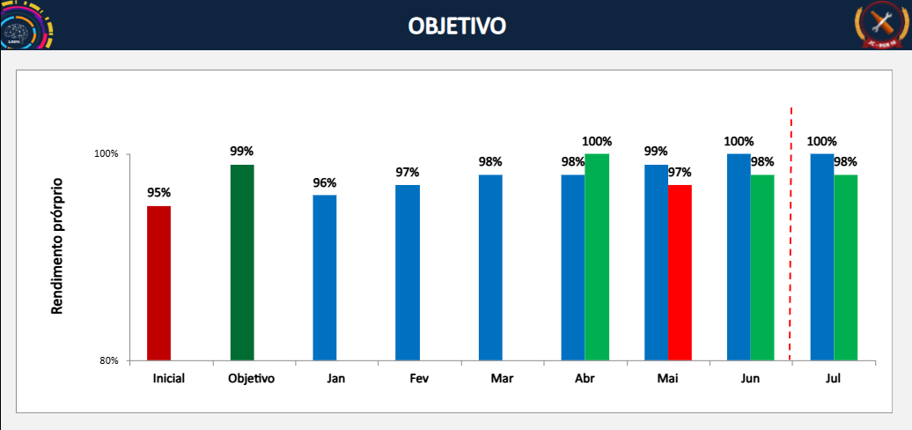

Etapa 4
Objetivo
Objetivo geral
Aumentar o rendimento próprio da Enchedora 02 por meio da eliminação das principais causas de ineficiência relacionadas a Mal Cheia e Acionamento Autoflush, elevando a estabilidade e a confiabilidade do equipamento.
95%Condição inicial
99%Objetivo
Entregas técnicas
Revisar subconjuntos críticos, tratar anomalias, atualizar planos, criar critérios de inspeção e validar o rendimento após as intervenções.

Evolução mensal do rendimento próprio em relação ao objetivo.